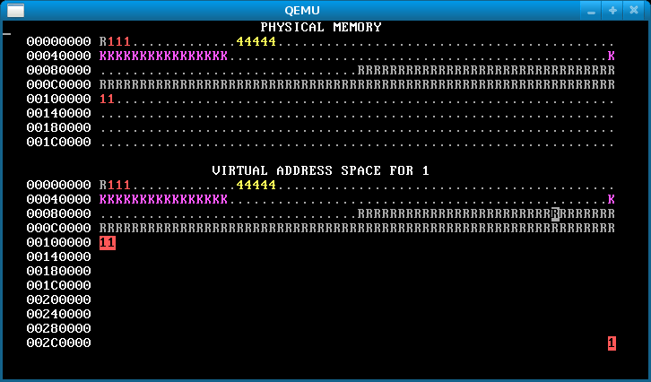

info
projects
coding projects
graphic design
ux design
studio art
I worked on a research project with two other students to investigate anonymous reputation systems that allow users to trust others for important transactions. Our system prioritizes the security of users by minimizing the storage of transactions, which means that relations between users, and therefore their identity, cannot be inferred even if the database is compromised.
I wrote a user-process memory allocator for a tiny operating system. the allocator provides process isolation through the use of a virtual memory system, much like what is done in a larger OS like linux. the growing bars are individual processes eating up RAM.
I made a twitter bot that responds to color requests with an image generated with the help of python's png and tweepy packages along with some color theory, "randomness", and basic geometry. it is hosted with heroku and understands any hex color code, html web color name, or the word "random". please tweet to it at twitter.com/pattern_bot! :)
some of my favorite images it has generated:

created a funny lavalamp made using OpenGL with metaballs:

the github repo for this can be found here if you would like to download it and try it for yourself! the gif just shows a few time frames of movement.